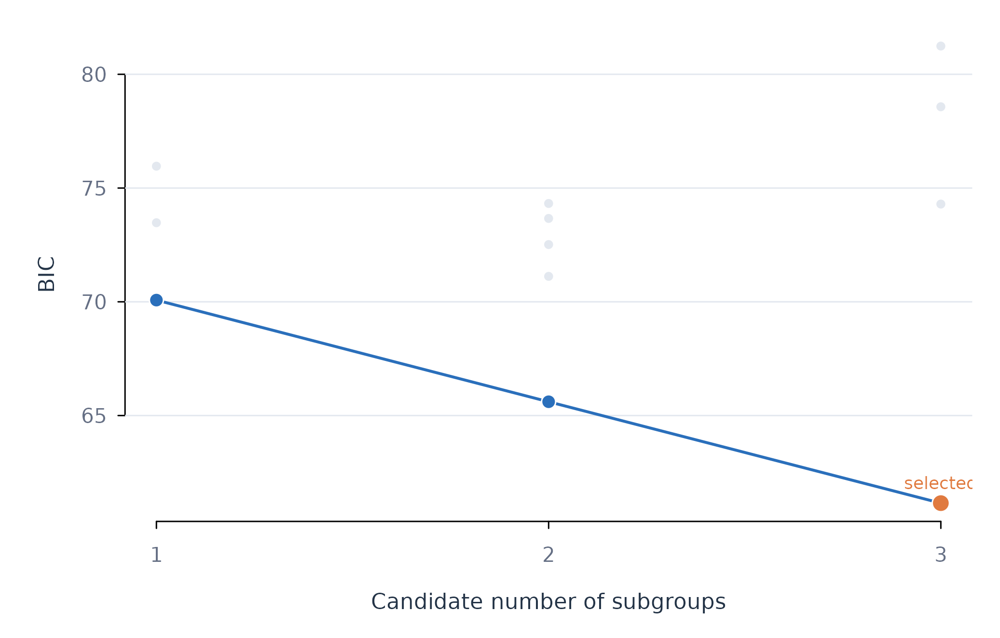

Testing Whether Subgroups Exist with test_subgroups()
Source:vignettes/test-subgroups.Rmd
test-subgroups.RmdAnalytic question
test_subgroups() asks whether person-specific
coefficient vectors are better represented by one population or by
several discrete groups. The function takes a repeated-measures
regression problem and a maximum group count. It returns a selected
count, an evidence label, distribution-shape diagnostics, and a tidy BIC
table.
test_subgroups() fits person-specific regressions and
compares Gaussian mixtures with one through k_max
components. The search covers several covariance structures. Bayesian
information criterion balances mixture fit against model complexity. A
clustering algorithm always returns a partition when asked for one. This
test allows one population to remain the selected answer.
Test one through three groups
test_subgroups() assesses efficacy and monitoring slopes
across 12 learners. The printed object states the selected group count
and evidence relative to one group.
subgroup_test <- test_subgroups(analysis_data, y = "effort", x = c("efficacy", "monitoring"), id = "name", time = "day", k_max = 3)
subgroup_test
#> Idiographic Subgroup Test
#> People: 12
#> Coefficients: efficacy, monitoring
#> Searched: k = 1..3, covariance models VVV/EEE/EEI/EII/VII/VVI
#>
#> VERDICT: 3 subgroups (BIC beats one group by 8.9: strong evidence)
#>
#> Use as.data.frame() for the BIC table.test_subgroups() selects three groups for this
12-learner subset. The printed verdict reports a BIC improvement of
about 8.9 over the one-group model. This result supports further
inspection of a three-group representation. It does not assign learners
to groups.
Inspect the model-selection table
as.data.frame() returns the BIC search as one row per
fitted mixture. Table 1 marks the selected row.
as.data.frame(subgroup_test)
#> k model loglik npar bic selected
#> 1 3 VVV -9.453076 17 61.14956 TRUE
#> 2 2 VVV -19.136141 11 65.60625 FALSE
#> 3 1 EEE -28.824924 5 70.07438 FALSE
#> 4 1 VVV -28.824924 5 70.07438 FALSE
#> 5 2 EEE -25.619379 8 71.11801 FALSE
#> 6 2 EEI -27.543610 7 72.48157 FALSE
#> 7 2 EII -28.803440 6 72.51632 FALSE
#> 8 1 EII -33.010388 3 73.47550 FALSE
#> 9 1 VII -33.010388 3 73.47550 FALSE
#> 10 2 VVI -25.649851 9 73.66386 FALSE
#> 11 3 EEI -24.723329 10 74.29572 FALSE
#> 12 2 VII -28.463607 7 74.32156 FALSE
#> 13 1 EEI -33.010388 4 75.96040 FALSE
#> 14 1 VVI -33.010388 4 75.96040 FALSE
#> 15 3 EEE -25.619384 11 78.57274 FALSE
#> 16 3 VVI -23.226589 14 81.24187 FALSEas.data.frame() reports a minimum BIC of about 61.1 for
the selected three-component model in Table 1. The best one-component
model has a BIC of about 70.1. Model selection depends on the
coefficient distribution and the number of learners.
Plot the BIC comparison
The figure shows every fitted covariance model faintly and connects the best BIC at each candidate group count. This separates the group-count decision from the nuisance choice of covariance structure.
bic_table <- as.data.frame(subgroup_test)
best_by_k <- aggregate(bic ~ k, data = bic_table, min)
figure_begin()
plot(bic_table$k, bic_table$bic, pch = 21, bg = fig_col["grid"],
col = "white", cex = 1.0, xaxt = "n",
xlab = "Candidate number of subgroups", ylab = "BIC")
figure_grid(x = FALSE, y = TRUE)
lines(best_by_k$k, best_by_k$bic, col = fig_col["blue"], lwd = 2)
points(best_by_k$k, best_by_k$bic, pch = 21, bg = fig_col["blue"],
col = "white", cex = 1.35)
selected <- subset(bic_table, selected)
points(selected$k, selected$bic, pch = 21, bg = fig_col["orange"],
col = "white", cex = 1.65)
text(selected$k, selected$bic, "selected", pos = 3, cex = 0.75,
col = fig_col["orange"])
axis(1, at = sort(unique(bic_table$k)))
Figure 1. Bayesian information criterion across candidate subgroup models.
Figure 1 places the selected three-group solution at the global BIC minimum. The faint points show that covariance assumptions materially affect the score; the connected blue series shows the best available evidence for each group count. Lower BIC indicates the preferred fit-complexity trade-off.
Assumptions and failure checks
test_subgroups() assumes that the person-specific
coefficient distribution can be compared with Gaussian mixtures.
Skewness and heavy tails can produce apparent classes when the
population is continuous. Bauer and Curran describe this overextraction
problem for mixture models (Bauer and Curran 2003). The returned
shape diagnostics should therefore accompany the BIC result.
test_subgroups() needs more people than candidate
components and enough observations to estimate each person’s slopes. A
selected class count is sample-dependent. Replication or stability
analysis is needed before treating classes as substantive
categories.
When to use which
test_subgroups() is appropriate for evidence about the
number of coefficient populations. find_subgroups() is
appropriate for assigning people to a requested or selected number of
groups. fit_subgroups() is appropriate for comparing
group-specific prediction with pooled and individual alternatives.